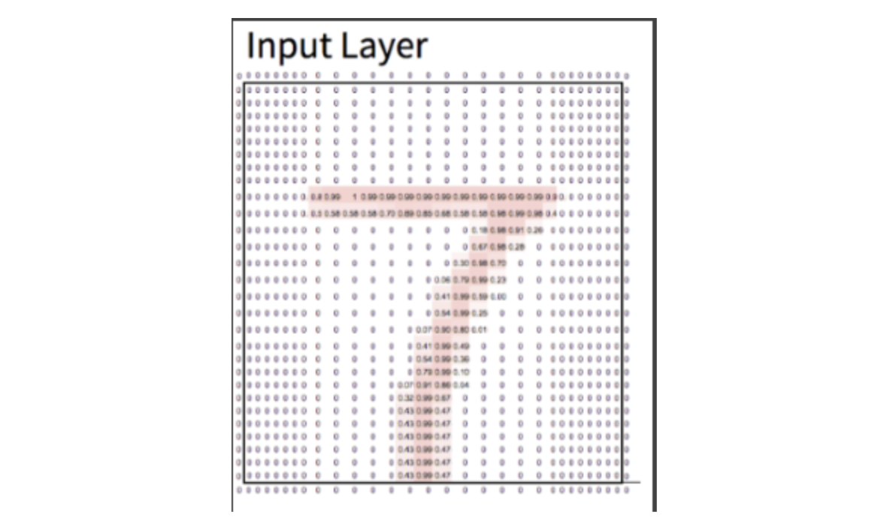
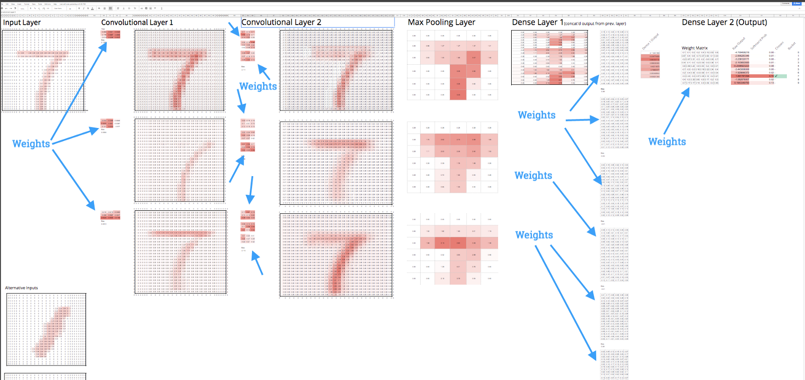
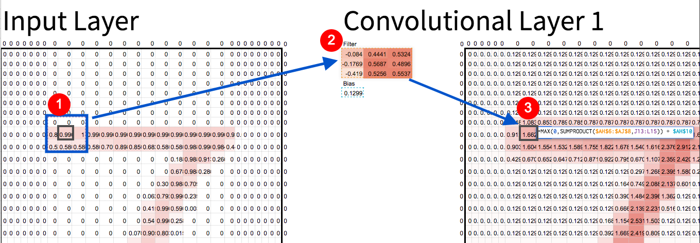
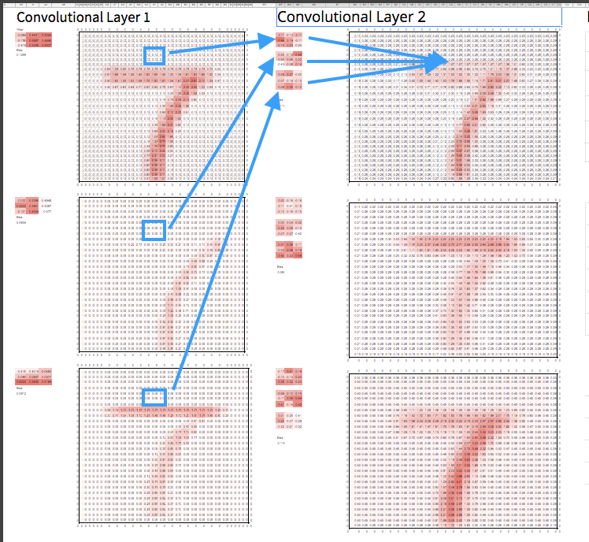
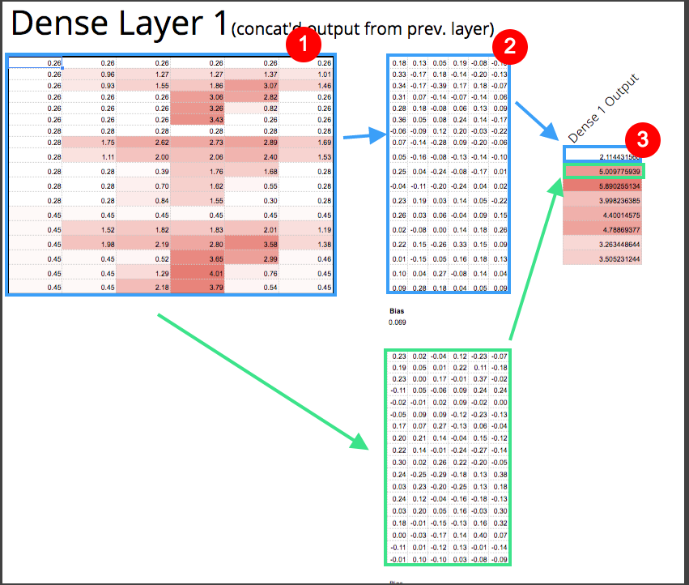

Building a Deep Neural Net In Google Sheets
by Blake West
MMMMMMMMMMMMMMMMMMMMMMMMMMMMMMMMMMMMMMMMMMMMMMMMMMMMMMMMMMMMMMMMMMMMMMMMMMMMMMMMMMMMMMMMMMMMMMMMMMMMMMMMMMMMMMMMMMMMMMMM MMMMMMMMMMMMMMMMMMMMMMMMMMMMMMMMMMMMMMMMMMMMMMMMMMMMMMMMMMMMMMMMMMMMMMMMMMMMMMMMMMMMMMMMMMMMMMMMMMMMMMMMMMMMMMMMMMMMMMMM MMMMMMMMMMMMMMMMMMMMMMMMMMXAAIIIIIIAAXMMMMMMMMMMMMMMMMMMMMMMMMMMMMMMMMMMMMMMMMMMMMXAAIIIIIIAXXMMMMMMMMMMMMMMMMMMMMMMMMMM MMMMMMMMMMMMMMMMMMMMMMXA=..............=AXMMMMMMMMMMMMMMMMMMMMMMMMMMMMMMMMMMMMXI=..............=AMMMMMMMMMMMMMMMMMMMMMMM MMMMMMMMMMMMMMMMMMMMA=....................=AMMMMMMMMMMMMMMMMMMMMMMMMMMMMMMMMI.....................=AMMMMMMMMMMMMMMMMMMMM MMMMMMMMMMMMMMMMMMI..........................IMMMMMMMMMMMMMMMMMMMMMMMMMMMMI..........MM..............AMMMMMMMMMMMMMMMMMM MMMMMMMMMMMMMMMMA..............................AMMMMMMMMMMMMMMMMMMMMMMMMA........A......IWWI..........=XMMMMMMMMMMMMMMMM MMMMMMMMMMMMMMMI................................IMMMMMMMMMMMMMMMMMMMMMM=........M..=I=..IMMI...AIX......IMMMMMMMMMMMMMMM MMMMMMMMMMMMMM=..................................=MMMMMMMMMMMMMMMMMMMX..........AI.=WX..==.......=.......IMMMMMMMMMMMMMM MMMMMMMMMMMMM=..........=IAXMMMMMMXXAI=...........=MMMMMMMMMMMMMMMMMX......==..IX.......IMM=...IX.........=MMMMMMMMMMMMM MMMMMMMMMMMM=.........IXMMMMMMMMMMMMMMMXI..........=MMMMMMMMMMMMMMMM.......AA...M...XWM...=.X=..I..........IMMMMMMMMMMMM MMMMMMMMMMMA........IMMMAI=....=IAMMMMMMMM=.........AMMMMMMMMMMMMMMI...........AA.I.IXX.....=M=..=..........AMMMMMMMMMMM MMMMMMMMMMM........AMMI............=XMMMMMM=.........MMMMMMMMMMMMMX.......AWX=...IX......IA..AA==MA..........MMMMMMMMMMM MMMMMMMMMMI.......AMX......==........AMMMMMX.........IMMMMMMMMMMMM=........A......=AAI..=.....A..............AMMMMMMMMMM MMMMMMMMMM.......=MMIIAIIIIIII==IIIAIIWWWMMM..........MMMMMMMMMMMX..........==IIIIAAAAAAAAAAIIII==...........=MMMMMMMMMM MMMMMMMMMX.......XWWAXMXXXXXAAAAAXXXXXWWWWWM..........XMMMMMMMMMMA.......=WMMMMMMMMMMMMMMMMMMMMMMMMX..........MMMMMMMMMM MMMMMMMMMA.......XMM==I====II=..=====.XMMMMM..........AMMMMMMMMMMI.......MWWWWWWWWWWWWWWWWWWWWWWWWWM..........XMMMMMMMMM MMMMMMMMMI.......XMMA................=MMMMMM=.........IMMMMMMMMMM=.......WWWWWWWWWWWWWWWWWWWWWWWWWWW..........AMMMMMMMMM MMMMMMMMMI.......AMMMA..............IMMMMMMMX.........IMMMMMMMMMM=.......WWWWWWWWWWWWWWWWWWWWWWWWWWW..........AMMMMMMMMM MMMMMMMMMA........XMMMMA=........=IXMMMMMMMMMX........AMMMMMMMMMMI.......WWWWWWWWWWWWWWWWWWWWWWWWWWWA.........XMMMMMMMMM MMMMMMMMMA.........XMMMMMMXXAAXXMMMMMMMMMMMM=.........AMMMMMMMMMMI.......AWWWWWWWWWWWWWWWWWWWWWWWWWWWA........XMMMMMMMMM MMMMMMMMMM..........IMMMMMMMMMMMMMMMMMMMMMMM..........MMMMMMMMMMMX........AWWWWWWWWWWWWWWWWWWWWWWWWWX=........MMMMMMMMMM MMMMMMMMMM=...........=AXMMMMMMMMMMMMMMMMMMA.........=MMMMMMMMMMMM.........IWWWWWWWWWWWWWWWWWWWWWWWW.........IMMMMMMMMMM MMMMMMMMMMX..............AMMMMMMMMMMMMMMMMX=.........XMMMMMMMMMMMMA..........AMWWWWWWWWWWWWWWWWWWWWX.........MMMMMMMMMMM MMMMMMMMMMMI.............MMMMMMMMMMMMA..............IMMMMMMMMMMMMMM=............IWWWWWWWWWWWWWWWWWW=........AMMMMMMMMMMM MMMMMMMMMMMM............=MMMMMMMMMMMMI..............MMMMMMMMMMMMMMMX.............WWWWWWWWWWWWMIIIII........=MMMMMMMMMMMM MMMMMMMMMMMMX...........XMMMMMMMMMMMM=.............XMMMMMMMMMMMMMMMMA...........IWWWWWWWWWWWWI.............MMMMMMMMMMMMM MMMMMMMMMMMMMX..........=============.............XMMMMMMMMMMMMMMMMMMA..........MWWWWWWWWWWWW=............MMMMMMMMMMMMMM MMMMMMMMMMMMMMX.................................=XMMMMMMMMMMMMMMMMMMMMX.........MMMMMMMMMMMMM...........=MMMMMMMMMMMMMMM MMMMMMMMMMMMMMMMI..............................IMMMMMMMMMMMMMMMMMMMMMMMM=..............................AMMMMMMMMMMMMMMMM MMMMMMMMMMMMMMMMMX=...........=AI............=XMMMMMMMMMMMMMMMMMMMMMMMMMMA=...........=I=............=XMMMMMMMMMMMMMMMMM MMMMMMMMMMMMMMMMMMMX=.........MMX..........=XMMMMMMMMMMMMMMMMMMMMMMMMMMMMMMA=........I.AA=.........IXMMMMMMMMMMMMMMMMMMM MMMMMMMMMMMMMMMMMMMMMMA=................=AMMMMMMMMMMMMMMMMMMMMMMMMMMMMMMMMMMMXI=.......=........=AMMMMMMMMMMMMMMMMMMMMMM MMMMMMMMMMMMMMMMMMMMMMMMMXAI==....==IAXMMMMMMMMMMMMMMMMMMMMMMMMMMMMMMMMMMMMMMMMMMXAI==....==IAXMMMMMMMMMMMMMMMMMMMMMMMMM MMMMMMMMMMMMMMMMMMMMMMMMMMMMMMMMMMMMMMMMMMMMMMMMMMMMMMMMMMMMMMMMMMMMMMMMMMMMMMMMMMMMMMMMMMMMMMMMMMMMMMMMMMMMMMMMMMMMMMMM MMMMMMMMMMMMMMMMMMMMMMMMMMMMMMMMMMMMMMMMMMMMMMMMMMMMMMMMMMMMMMMMMMMMMMMMMMMMMMMMMMMMMMMMMMMMMMMMMMMMMMMMMMMMMMMMMMMMMMMM
I want to show you that Deep Convolutional Neural Nets are not nearly as intimidating as they sound. And I’ll prove it by showing you an implementation of one that I made in Google Sheets. It’s available here. Copy it (use the File → Make a copy option in top left) , and you can then play around with it to see how the different levers affect the model’s prediction.
The rest of the article will be a short intro to understand the high level intuitions behind Convolutional Neural Nets (CNN), and then some recommended resources for further information.
Before continuing, I’d like to make a shout out to FastAI. I recently finished their wonderful deep learning course, and all inspiration and credit really goes to them. The fantastic instructor Jeremy Howard, with his co-founder Rachel Thomas showed the class the idea of doing a CNN in Excel. But as far as I could tell, the spreadsheet was not available online, and also didn’t seem to fully complete the network. I’m doing a small extension to their work, and putting it on Google Sheets so it’s easier for everyone to play around with.
How Did I Build It?
I trained a (very) simple CNN on the MNIST data set, which is a bunch of black and white images of handwritten digits. Each image is 28x28 pixels. Each pixel gets represented as a number between 0 (no ink) and 1 (maximum ink). It’s a classic data set to use because it’s small enough to be quick, but real enough to show the complexity of machine learning. The job of the model is to determine what number the image is. Each image will always be of exactly one number 0–9.
Example image from MNIST. 28x28 pixels. Note: I added conditional formatting in Sheets so pixels with more “ink” show up more red.
I trained the model using a popular deep learning library called Keras (see that code here), and then put the trained weights from my model into Sheets. The trained weights are just numbers. To put it into Sheets, this meant literally copying and pasting a bunch of numbers from my model into Sheets. The last step was adding formulas to replicate what the model does, which is just regular old multiplication and addition. Let me reiterate that: the math to replicate a deep learning model’s predictions stops at multiplication and addition [1].
There are weights (a.k.a. “parameters”) in each layer of the model. Weights are automatically learned by any machine learning model. This model has around 1000 weights. More complex models can easily have hundreds of millions. You can see all 1000 of this model’s weights below:
When to Use Convolutional Neural Nets?
You use CNN’s to find patterns in sequential data where you’re pretty positive patterns exist, yet you find it hard to put those patterns into words, or to extract them through simple rules. CNN’s assume order matters.
For example, classifying pictures are a prime use case for CNN’s, because the pixels are logically sequential, and it’s clear to any human that there’s loads of patterns. Yet, just try putting into words exactly what separates a cat from a chihuahua, and you’ll see why CNN’s are useful.
On the other hand, if you’ve got current baseball stats between two teams, and you want to predict the winner, then CNN’s would be a weird choice. The data you have (eg. number of wins, losses, or team batting average) is not inherently sequential. Order doesn’t matter there, and we have already extracted the patterns we believe to be useful. So CNN’s won’t be helpful.
Intuitions Behind CNN’s
To understand these beasts, let’s break apart the Deep Convolutional Neural Net into it’s constituent parts of “Deep”, “Convolutional” and “Neural Net”.
Convolutions
Imagine for a minute that you’re blind. But your job is to figure out what digit this handwritten image is of. You’re allowed to talk to someone who sees the image, but they have no idea what numbers are. So all you can ask them is simple questions. What could you do?
One approach you could take is to ask things like, “Is it mostly straight at the top?”, “diagonal from right to left?”, etc. With enough questions like that, you could actually take a pretty good guess that it’s a 7, or a 2, or whatever.
Intuitively, that’s what the convolutions are doing. The computer is blind, so it does what it can and asks lots of little pattern questions.
Box 1 is multiplied by box 2. Sum the result, and you get box 3. That’s a convolution.
To ask those questions, every pixel in the image gets run through a function (a.k.a. “convolution”) that produces a corresponding pixel, which answers one of those little pattern questions. Convolutions use filters to find patterns. For example, notice how the filter above (no. 2 in the screenshot) is more red on the right side, and less red on the left. That filter will essentially look for left edges.
It may not be obvious why it will find left edges, but play with the spreadsheet and you’ll see for yourself that’s how the math works out. Filters find things that look like themselves. And CNN’s will often use hundreds of filters, so you get lots of little “scores” for each pixel, kind of like a left-edge score, top-edge score, diagonals, corners, etc.
Deep
Ok, so asking about edges is cool, but what about more complex shapes?” This is where the “deep” multiple layers thing comes in. Because now that we have a “left-edge”, “top-edge”, and other simple “filters” of the image, we can add another layer, and run convolutions on all the previous filters, and combine them! So combining 50/50 a left edge and top edge could give you a rounded left corner. Cool, huh?
The second convolution takes corresponding pixels from the previous convolution layer and multiplies each by it’s own filter. Just like before, we sum the result, and that produces a new corresponding pixel for the second convolution layer.
Serious CNN’s will have many layers, which allow the model to build up increasingly abstract and complex shapes. Even after only 4 or 5 layers, your model could start finding faces, animals, and all kinds of meaningful shapes.
Neural Nets
Now you might be asking yourself, “So that’s all great, but coming up with all the right filters sounds really tedious.” “And what about at the end? How do I combine all the answers from those filters into something useful?”.
First it’s useful to realize that at a high level, our CNN really has two “sections” to it. The first section, the convolutions, finds useful features in our image data for us. The second section, the “dense” layers (so named because there are so many weights tying to every neuron) towards the end of the spreadsheet, do the classifying for us. Once you have the features, the dense layers really aren’t that dissimilar from running a bunch of linear regressions and combining them into a score for each possible number. The highest score is the model’s guess.
Matrix 1 is the output from our convolutions. Then every pixel from matrix 1 is multiplied by a corresponding number in matrix 2 . The summation of that produces number 3. You repeat that process again for the boxes in green. You end up with 8 outputs, or “neurons” in deep learning jargon.
Figuring out all the right weights to use for the filters and the Dense layers at the end would be really annoying. Luckily figuring out those weights automatically is kind of the entire point of NN’s, so we don’t need to worry about that. But if you’re curious, you should google “back propagation”.
Summary
There’s roughly two parts to every CNN. The convolutions, which always go at the beginning to find useful features in the image, and the layers at the end, often called “dense” layers, which classify things based on those features.
To get a real feel for them, I would encourage you to play with the spreadsheet. Trace a pixel from beginning to end. Mess with the filters, and see what happens. I also explain more technical details in the comments of the spreadsheet.
Resources
To learn more, I recommend the following resources:
Interactive Convolutions — A killer interactive tutorial on convolutions (ie. just the C part, not the NN part) by Victor Powell.
Practical Deep Learning for Coders — The course from Fast.AI which I took, and learned a lot from. It’s online and completely free.
Great video showing basics of CNN — This is from Jeremy Howard (FastAI founder), and is a 20 minute video going over CNN’s. It’s excellent. The video is embedded in that page. Start from minute 21 when you open the video.
Notes
[1] — The math required to train the CNN includes calculus, so it can automatically adjust the weights. But once the model is trained, it does actually only require multiplication and addition to do predictions. And in practice, the calculus is handled by whatever deep learning library you’re using.